Livsmedelsverket is the state management authority for food issues with the task of working actively in consumer interests for safe food, fairness in food handling, good food habits, and legislation on food. All the information for consumers can be found in their website. The aim of this project was to both update the UI and make sure that the website is accessible for every user. With the web accessibility laws coming in effect on June 2025, Livsmedelsverket like many companies and authorities, have spent resources into making sure that their websites comply with the Web Content Accessibility Guidelines (WCAG).
Are both private and corporate. Private users ate mostly concerned about safe food, food handling, good food habits, and food recalls. The corporate users go in the website to learn, and know how to comply with food legislations.
In Livsmedelsverket’s website, guidance to the legislation on food, and food control can be found. The rules that apply and what they mean, and read about how food control works. Advice on food consumption, food handling and recalls can also be found. As such the website contains articles, advice columns, product recall lists, divided in different categories and subcategories.

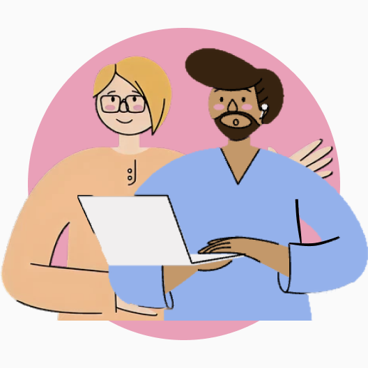
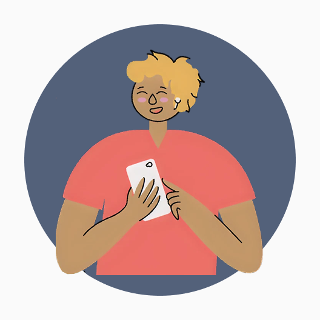
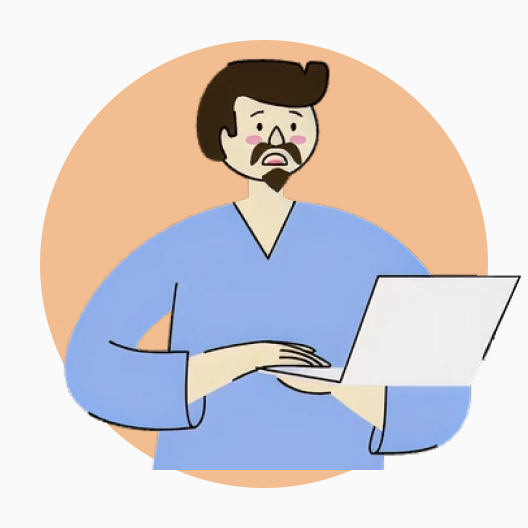
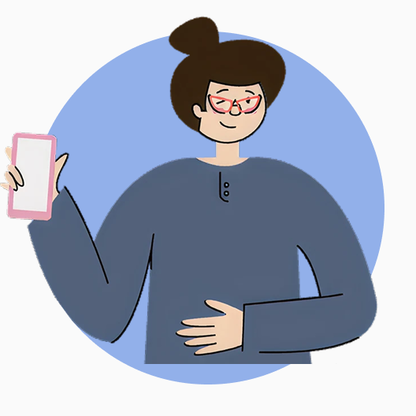

The project started with a meeting with the project manager and the tech lead where they explained the context and what had been done so far in the project. After I had a meeting with the project owners. They explained that their objective was to comply with WACG and update the UI. They shared a sketch to show what they had in mind for the start page. I used it as an inspiration, and to understand what new features they wanted to offer.
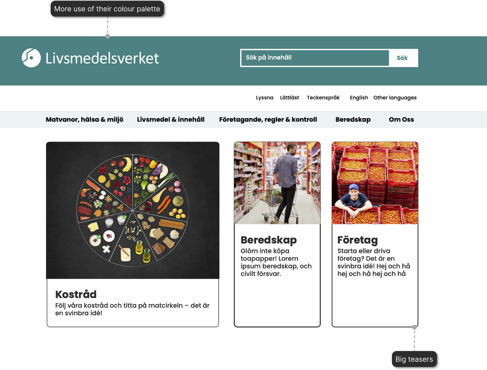
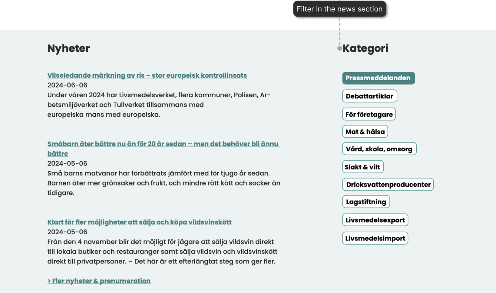
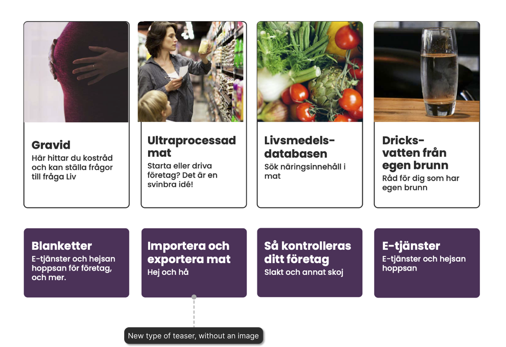
Besides the start page, some changes had to be made to the navigation and to the content pages. The content pages
needed changes to the line length. The spacing and size of the font were a global change.
The navigation got a cleaner look and the secondary colours were used more often, for example to bring contrast to
blocks of text so the scanning of information would be easier and faster.
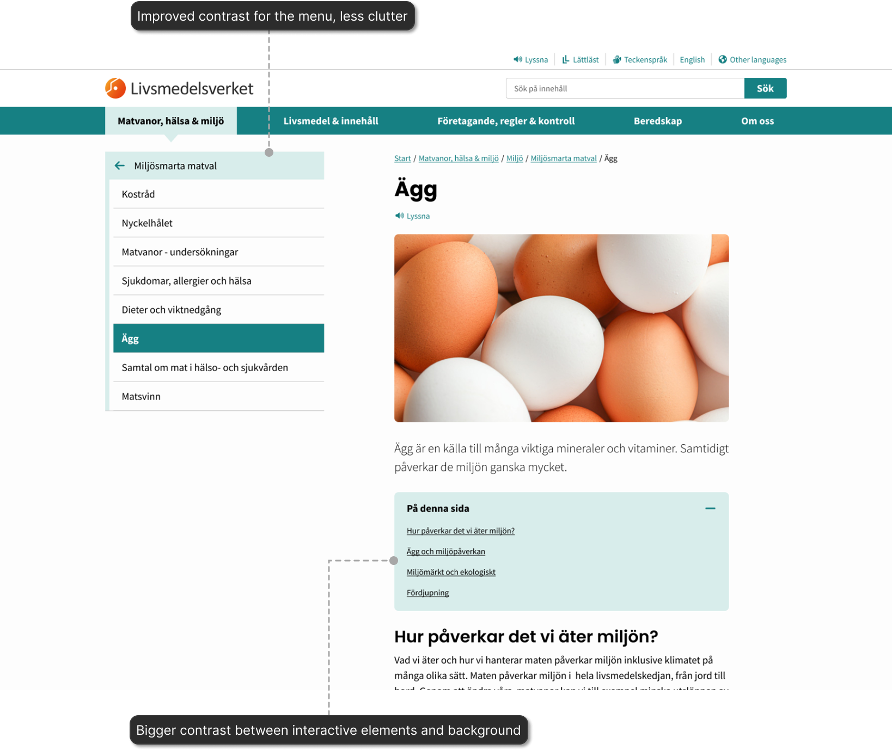
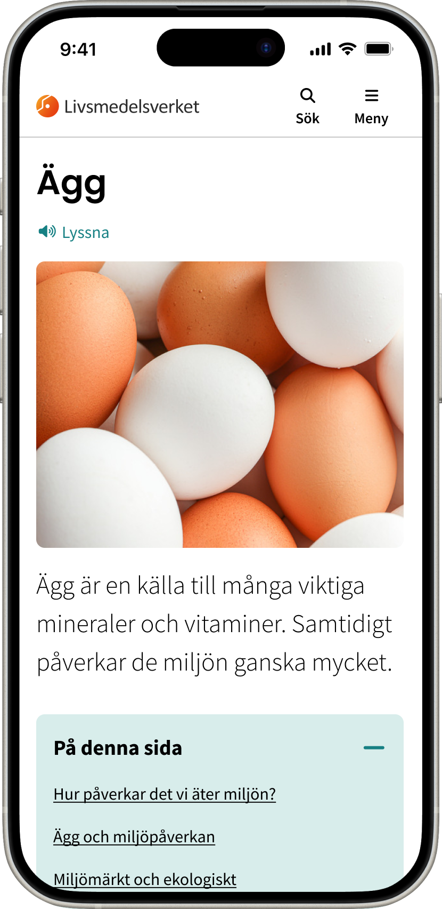

Some other elements were also considered and given suggestions for improving, such as the tables. The tables are often used in the website. I created some alternatives on how to improve their readability and usefulness. There were two main alternatives. The first one, was to add colour for contrast between rows. However keeping the tables as they were came with challenges for small screens. I designed a table that used tabs, so the user would be aware of all the columns at a glance and could change between what they considered the relevant content faster. The second alternative, was to reconsider the use of tables for all the display of data. Specially when the information in the rows wasn't related. For these cases I designed cards to be used instead of tables.
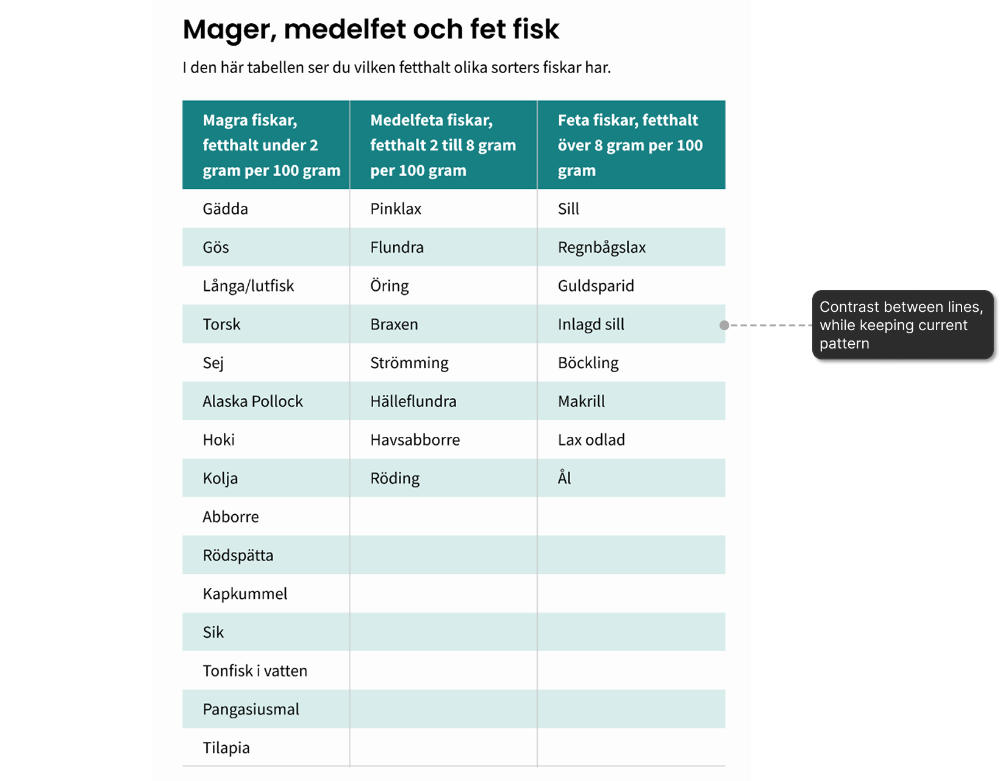
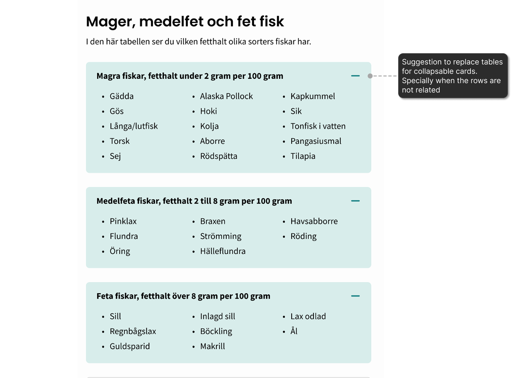


I had weekly meetings with the PO’s so there was constant iteration until only one alternative was left. Once the designs for the different sections were approved I would deliver it to the full stack developer through a meeting and Figma specifications. Who would then implement and sometimes come back to me when questions or concerns arose.

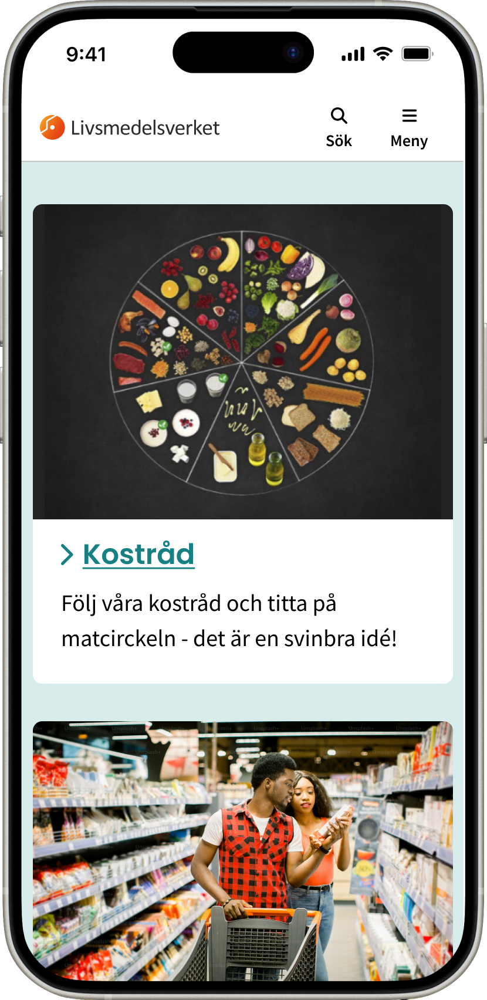
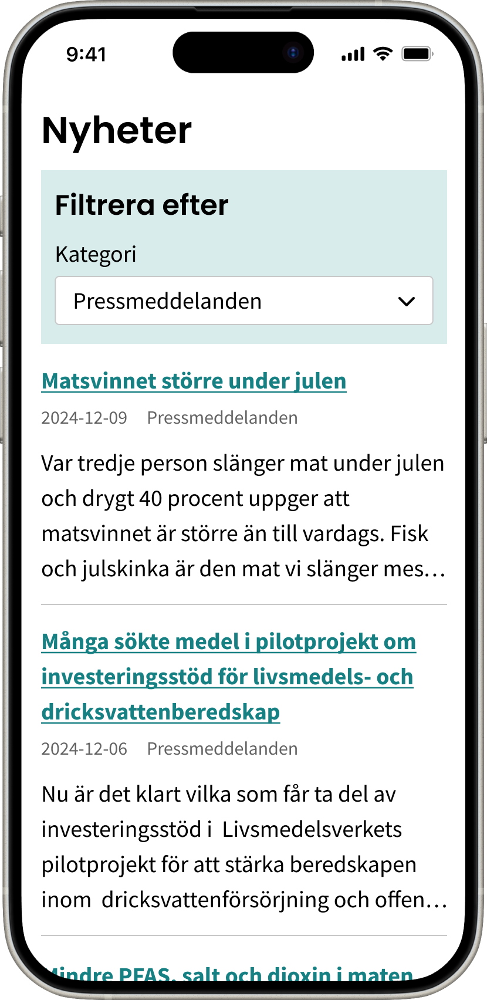

I believe the number of meetings during implementation could have been reduced if the designs had more annotations.
Specially regarding the decisions directly related to WCAG. So, be more explicit with my annotations within the design
and use them to stress the importance of the design decisions made.